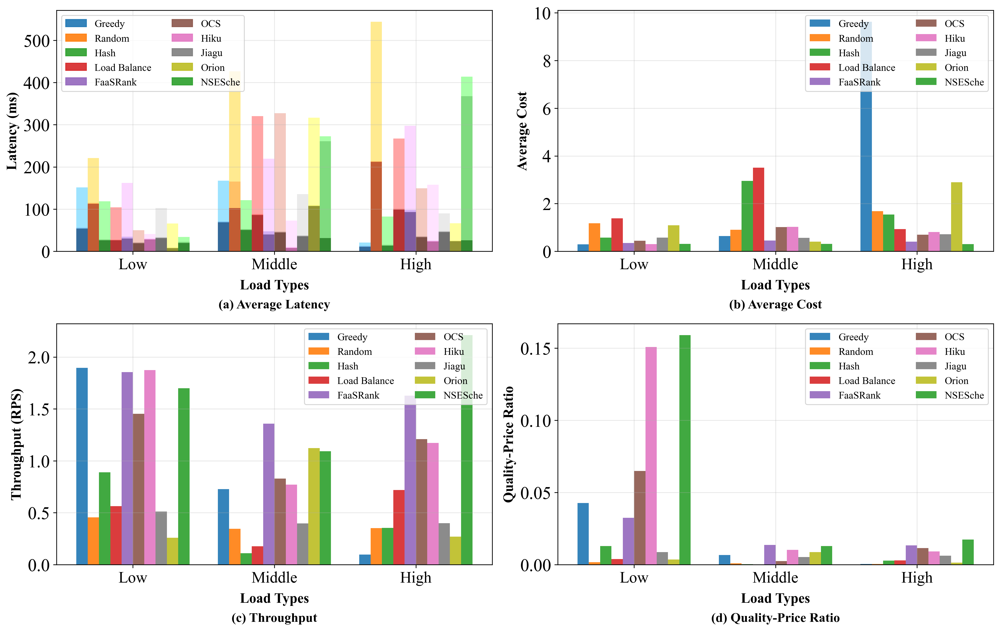
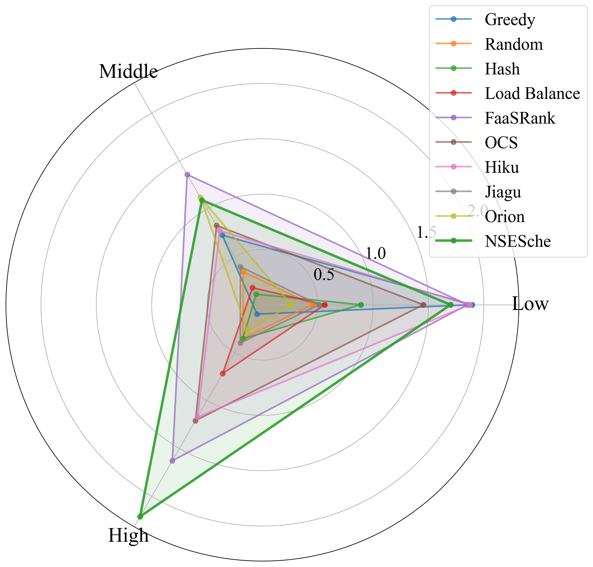

Academic Visualization Results
AAAI Conference Submission - Serverless Scheduling Algorithms Comparison
Performance Comparison Charts
Figure 1: Comprehensive performance comparison across different load types (Low, Middle, High).
All charts use soft academic colors suitable for publication and group algorithms by load types for better comparison.

Throughput Radar Chart
Figure 2: Radar chart showing throughput performance across different load conditions.
NSESche (proposed algorithm) is highlighted for emphasis.
